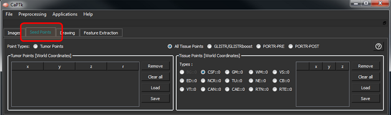

The Seed Points tab includes two general types of initialization (i.e., tumor and tissue points), controlled by the respective radio buttons.

Seed point initialization
Loading and saving is done via text files in a format consistent with respective applications. Seedpoint files are needed for the following applications (and all derivatives): GLISTR (
https://www.cbica.upenn.edu/sbia/software/glistr/) [1-3], GLISTRboost (BraTS 2015 top-ranked algorithm -
https://www.med.upenn.edu/sbia/glistrboost.html) [4-6], and PORTR (
https://www.cbica.upenn.edu/sbia/software/portr/) [7].
The controls to add/remove points are the shown below.
Tumor Points
These are seed-points used to approximate a tumor by a parametric spherical model, using a seed-point for its center and another for defining its radius. These are helpful for applications like tumor growth model estimation as currently incorporated in GLISTR and GLISTRboost. The controls are as follows:
| Key Stroke | Function |
| Shift + Space | Set initial tumor center |
| Ctrl + Space | Update tumor radius |
| Space | Update tumor center |
Tissue Points
These are seed-points with coordinate information. They can be used for a multitude of applications where manual initialization(s) are required for a semi-automated algorithm, e.g, segmentation. At the moment these points are being assigned various brain tissue labels, as follows:
| Tissue Acronym | Full Form |
| CSF | Cerebrospinal Fluid |
| VT | Ventricular Cerebrospinal Fluid |
| GM | Gray Matter |
| WM | White Matter |
| VS | Vessels |
| ED | Edema |
| NCR | Necrosis |
| TU | Enhancing Tumor |
| NE | Non-Enhancing Tumor |
| CB | Cerebellum |
| CAE | Enhancing Cavity |
| CAN | Non-Enhancing Cavity |
| RTN | Tumor Recurrence |
| RTE | Enhanced Tumor Recurrence |
Application-specific tissue types are automatically enabled when the corresponding application is selected. For example, when trying to initialize tissue points for GLISTR/GLISTRboost, only CSF, GM, WM, VS, ED, NCR, TU, NE and CB buttons will be enabled and the rest will be disabled. If there are some required tissue types missing for an application, CaPTk will display a warning and not let the user save an incomplete set of tissue points.
References:
-
A.Gooya, K.M.Pohl, M.Billelo, G.Biros, C. Davatzikos, "Joint segmentation and deformable registration of brain scans guided by a tumor growth model", Med Image Comput Comput Assist Interv. 14(Pt 2):532-40, 2011, DOI:10.1007/978-3-642-23629-7_65
-
A.Gooya, K.M.Pohl, M.Bilello, L.Cirillo, G.Biros, E.R.Melhem, C.Davatzikos, "GLISTR: glioma image segmentation and registration", IEEE Trans Med Imaging. 31(10):1941-54, 2012, DOI:10.1109/TMI.2012.2210558
-
D.Kwon, R.T.Shinohara, H.Akbari, C.Davatzikos, "Combining Generative Models for Multifocal Glioma Segmentation and Registration", Med Image Comput Comput Assist Interv. 17(Pt 1):763-70, 2014, DOI:10.1007/978-3-319-10404-1_95
-
S.Bakas, K.Zeng, A.Sotiras, S.Rathore, H.Akbari, B.Gaonkar, M.Rozycki, S.Pati, C.Davatzikos, "Segmentation of gliomas in multimodal magnetic resonance imaging volumes based on a hybrid generative-discriminative framework", In Proc. Multimodal Brain Tumor Image Segmentation (BraTS) Challenge. 4:5-12, 2015.
-
S.Bakas, K.Zeng, A.Sotiras, S.Rathore, H.Akbari, B.Gaonkar, M.Rozycki, S.Pati, C.Davatzikos, "GLISTRboost: combining multimodal MRI segmentation, registration, and biophysical tumor growth modeling with gradient boosting machines for glioma segmentation", Brainlesion (2015). 9556:144-155, 2016, DOI:10.1007/978-3-319-30858-6_1
-
S.Bakas, H.Akbari, A.Sotiras, M.Bilello, M.Rozycki, J.Kirby, J.Freymann, K.Farahani, C.Davatzikos, "Advancing The Cancer Genome Atlas glioma MRI collections with expert segmentation labels and radiomic features", Nature Scientific Data 4:170117, 2017, DOI:10.1038/sdata.2017.117
-
D.Kwon, M.Niethammer, H.Akbari, M.Bilello, C.Davatzikos, K.M.Pohl, "PORTR: Pre-Operative and Post-Recurrence Brain Tumor Registration", IEEE Trans Med Imaging. 33(3):651-667, 2014, DOI:10.1109/TMI.2013.2293478
 .
.